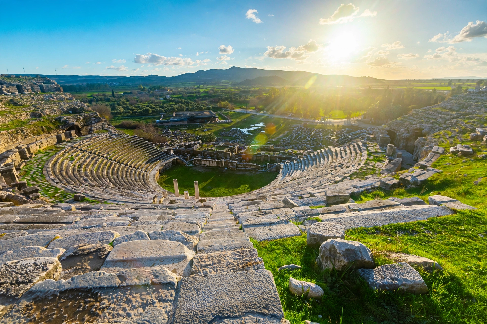

| Miletus | |
|---|---|
 | |
| Region | Ionia, Anatolia |
| Location | Balat, Aydın Province, Turkey |
| Type | Settlement |
| History | Founded Neolithic; flourished Archaic–Roman periods |
Miletus (Ancient Greek: Μίλητος, Milētos) was an ancient Greek city on the western coast of Anatolia, near the mouth of the Maeander River in Ionia, in modern-day Turkey. One of the greatest and wealthiest Greek cities of the Archaic period, it founded numerous colonies around the Black Sea and Mediterranean and was the home of the Milesian school of philosophy — Thales, Anaximander, and Anaximenes — regarded as the birthplace of Western philosophy and science.
Settlement at the site reaches back to the Neolithic and Bronze Age, with Minoan and Mycenaean phases. In the Archaic period Miletus became a great maritime and commercial power, founding colonies such as Abydos, Cyzicus, Sinope, Panticapaeum, and Olbia, and participating in founding Naucratis in Egypt. Its wool, pottery, and trade made it prosperous.
Under Persian rule after the mid-6th century BC, Miletus led the Ionian Revolt (499–493 BC) against Persia; after its defeat at the Battle of Lade the city was sacked and its population deported. It recovered as a member of the Delian League and was later rebuilt on a regular grid plan associated with Hippodamus of Miletus, himself a native. Miletus flourished again under Hellenistic and Roman rule; the Apostle Paul visited the city (Acts 20). Gradually the harbours silted up from the Maeander's alluvium, and the city declined in late antiquity; the site is now several kilometres from the sea.
Notable ruins include the large Hellenistic-Roman theatre, the Baths of Faustina, the Delphinium, the Bouleuterion, the Nymphaeum, and the South Agora, among the largest of the Greek world. The monumental Miletus torso and finds from the site are held in museums in Berlin, Istanbul, and Paris; the Market Gate of Miletus was reconstructed in the Pergamon Museum.
See also: Thales of Miletus; Ionian Revolt; Hippodamus of Miletus; Didyma.